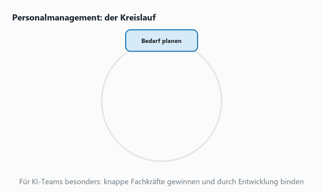
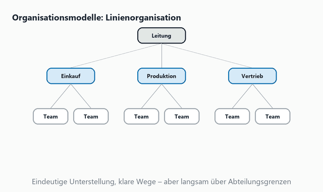
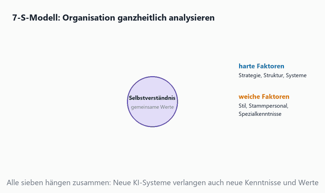
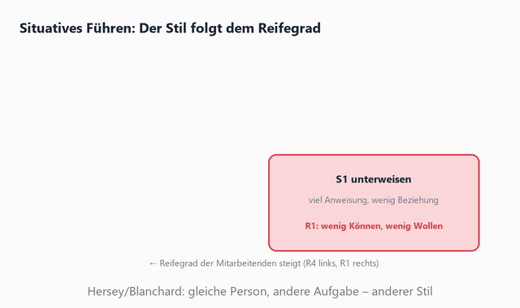
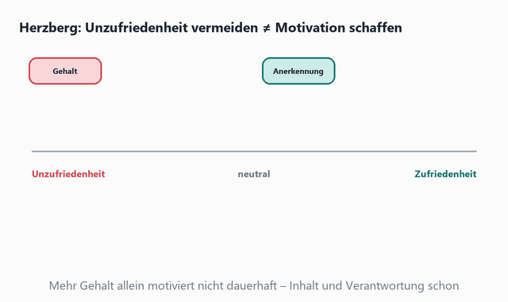
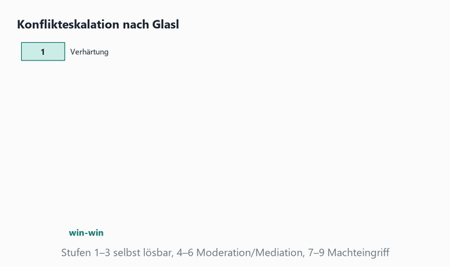
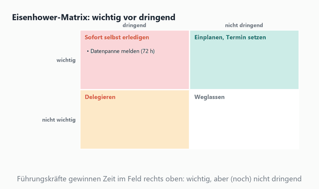

Personalmanagement und Führung: Menschen für KI gewinnen, führen und entwickeln
KI-Projekte scheitern seltener an der Technik als an Menschen: fehlende Fachkräfte, unklare Rollen, Widerstände, Konflikte. Als Bachelor Professional planen Sie Personal, gewinnen und entwickeln Talente, analysieren Organisationen, führen Teams situativ und agil, motivieren, geben Feedback, lösen Konflikte – und organisieren sich selbst.
Personalmanagement im Überblick

Personalmanagement sorgt dafür, dass zur richtigen Zeit die richtigen Menschen mit den richtigen Kompetenzen am richtigen Ort sind – zu vertretbaren Kosten und unter Beachtung von Arbeitsrecht und Mitbestimmung (Modul 16). Aufgaben: Personalplanung, -beschaffung und -auswahl, -einsatz, -entwicklung, -führung und -bindung, -freisetzung, dazu Verwaltung und Controlling.
KI verändert Personalarbeit doppelt: Sie braucht neue Kompetenzen (Data Science, KI-Kompetenz für alle) und sie wird selbst eingesetzt (Bewerbungsvorauswahl, Chatbots für HR-Fragen, Skill-Analysen) – dort oft als Hochrisiko-KI.
Personalmanagement: planen, gewinnen, einsetzen, entwickeln, führen, binden, freisetzen – strategisch ausgerichtet.
Personalbedarf planen: quantitativ und qualitativ
Beispiel: In 12 Monaten werden 18 Data Scientists gebraucht; heute sind es 12, zwei gehen in Rente, eine Einstellung ist zugesagt. 18 − (12 − 2 + 1) = 7 zusätzliche Stellen.
Qualitativ: Welche Kompetenzen werden gebraucht? Skill-Inventur (Ist) gegen Anforderungsprofile (Soll). KI verschiebt Bedarfe: weniger Routine-Sachbearbeitung, mehr Prüfung, Ausnahmebearbeitung, Datenkompetenz.
Netto = Brutto − (Bestand − Abgänge + Zugänge). Qualitativ: Kompetenzlücken zwischen Soll- und Ist-Profil.
Personalstrategien: Make or Buy, Talentmanagement, Employer Branding
| Strategie | Inhalt | Vor- und Nachteile |
|---|---|---|
| Make (intern entwickeln) | eigene Beschäftigte weiterbilden (Upskilling, Reskilling) | Bindung, Prozesswissen bleibt; dauert, braucht Lernzeit |
| Buy (extern gewinnen) | Fachkräfte einstellen | schnell neues Wissen; teuer, knapper Markt |
| Borrow (leihen) | Berater, Freelancer, Dienstleister | flexibel; Wissen geht wieder, Scheinselbstständigkeit beachten |
| Bot (automatisieren) | Aufgaben durch KI erledigen lassen | skalierbar; Akzeptanz, Kontrolle, Mitbestimmung |
Talentmanagement: Schlüsselpositionen und Talente identifizieren, gezielt entwickeln, binden und Nachfolge planen. Gesucht sind neben Fachwissen dynamische Problemlösekompetenz – die Fähigkeit, in neuen, unklaren Situationen Lösungen zu entwickeln. Employer Branding: als attraktiver Arbeitgeber erkennbar werden (spannende Daten und Aufgaben, Lernzeit, moderne Werkzeuge, flexible Arbeit, Sinn).
KI-Kompetenz entsteht meist im Mix: wenige Spezialisten einstellen, viele Beschäftigte weiterbilden, gezielt extern ergänzen.
Kompetenzen für KI-Teams: Rollen und Skill-Profile
| Rolle | Kernaufgaben | Kompetenzen |
|---|---|---|
| Data Engineer | Datenzugang, Pipelines, Datenqualität | SQL, Datenbanken, Cloud, Programmierung |
| Data Scientist | Analyse, Modelle, Experimente | Statistik, ML, Python, Fachverständnis |
| ML Engineer / MLOps | Modelle in Betrieb bringen, überwachen | Softwaretechnik, Automatisierung, Monitoring |
| Product Owner / Business Analyst | Nutzen, Anforderungen, Prioritäten | Fachdomäne, Kommunikation, Wirtschaftlichkeit |
| KI-Governance, Recht, Datenschutz | Regeln, Risiko, Nachweise | KI-Verordnung, DSGVO, Risikomanagement |
| Alle Beschäftigten | KI-Werkzeuge sicher nutzen | KI-Kompetenz (Art. 4 KI-Verordnung): Chancen, Grenzen, Regeln |
T-förmige Profile: tiefes Wissen in einem Gebiet, breites Verständnis für die Nachbarrollen. Skill-Profile beschreiben Fach-, Methoden-, Sozial- und Selbstkompetenz mit Ausprägungen (z. B. Grundlagen, Anwender, Experte).
Ein KI-Team ist interdisziplinär: Daten, Modelle, Betrieb, Fachbereich und Governance – plus KI-Kompetenz für alle Nutzer.
Personalauswahl: Anforderungsprofil, Verfahren, strukturiertes Interview, AGG
- Anforderungsprofil: Muss- und Kann-Anforderungen aus der Aufgabe ableiten.
- Ausschreibung intern und extern, neutral formuliert (m/w/d, keine Altersgrenzen).
- Vorauswahl nach Unterlagen – bei KI-Unterstützung: Hochrisiko-KI, menschliche Prüfung, Bias-Kontrolle.
- Auswahlverfahren: strukturiertes Interview, Arbeitsprobe (z. B. Datenanalyse-Aufgabe), Assessment Center, Tests.
- Entscheidung nach vorher festgelegten Kriterien, Mitbestimmung des Betriebsrats (§ 99 BetrVG), Absagen ohne Begründungsrisiko formulieren.
Alle Bewerbenden bekommen die gleichen, anforderungsbezogenen Fragen, Antworten werden mit verankerten Skalen bewertet, möglichst von mehreren Personen. Es hat eine deutlich höhere Vorhersagekraft als ein freies Gespräch.
Keine Benachteiligung wegen ethnischer Herkunft, Geschlecht, Religion oder Weltanschauung, Behinderung, Alter, sexueller Identität. Auch mittelbare Benachteiligung zählt – etwa wenn ein KI-System aus früheren Einstellungen lernt, überwiegend Männer vorzuschlagen. Folge: Entschädigung nach § 15 AGG – höchstens drei Monatsgehälter, wenn die Person auch ohne Benachteiligung nicht eingestellt worden wäre; Frist zur Geltendmachung zwei Monate.
Gute Auswahl: klares Anforderungsprofil, strukturierte Verfahren, festgelegte Kriterien, AGG-konform – auch wenn KI hilft.
Personaleinsatz planen und Personal entwickeln
Die richtigen Personen den Aufgaben zuordnen: nach Qualifikation, Verfügbarkeit, Belastung und Entwicklungszielen. Instrumente: Einsatz- und Schichtpläne, Kapazitätsplanung, Job Rotation, Job Enlargement (mehr gleichartige Aufgaben), Job Enrichment (mehr Verantwortung).
Bedarf ermitteln (Soll-Ist-Profile) → Maßnahmen planen → durchführen → Transfer sichern → Erfolg bewerten. Formen: on the job (Projekte, Coaching), near the job (Qualitätszirkel), off the job (Seminare, E-Learning), along the job (Karrierepfade).
KI-Kompetenz aufbauen: Grundlagenschulung für alle, Vertiefung für Key User, Spezialisierung für Expertinnen; Lernzeit einplanen, Praxisaufgaben, interne Community. Erfolg messen: Nutzung, Qualität, Zufriedenheit – nicht nur Teilnahmezahlen.
Entwicklung wirkt nur mit Transfer in die Arbeit: Lernen, Anwenden, Feedback.
Organisationsanalyse: Aufbau- und Ablauforganisation, Organigramm
Wer ist wofür zuständig? Stellen, Abteilungen, Leitungsbeziehungen, Kompetenzen – dargestellt im Organigramm. Leitungsspanne (Mitarbeitende je Führungskraft) und Leitungstiefe (Hierarchieebenen) sind Kennzahlen.
Wie laufen Prozesse? Reihenfolge, Zeit, Ort, Schnittstellen (Modul 8). KI-Projekte verändern oft vor allem die Abläufe – die Aufbauorganisation muss dann nachziehen (z. B. neue Rolle „KI-Prüfer“).
Analysefragen: Wo entstehen Doppelarbeit und Wartezeiten? Sind Verantwortungen eindeutig? Passt die Struktur zur Strategie? Wo sitzt KI-Kompetenz – zentral (Kompetenzzentrum), dezentral in den Fachbereichen oder als Hub-and-Spoke-Modell (zentrales Team plus KI-Verantwortliche in den Bereichen)?
Aufbau: Wer? Ablauf: Wie? Beide gemeinsam analysieren und an der Strategie ausrichten.
Organisationsmodelle: Linie, Matrix, Projekt und das 7-S-Modell

| Modell | Vorteil | Nachteil |
|---|---|---|
| Einlinienorganisation | klare Zuständigkeit | lange Wege, Abteilungsdenken |
| Stablinienorganisation | Experten beraten die Leitung | Stab hat keine Weisungsbefugnis |
| Matrixorganisation | Fach- und Projektwissen verbunden | zwei Vorgesetzte, Konflikte |
| Reine Projektorganisation | volle Konzentration, schnelle Entscheidungen | Ressourcen gebunden, Rückkehr der Beteiligten |

Die Organisationsform folgt der Aufgabe; das 7-S-Modell zeigt, dass Strategie, Struktur und Systeme nur mit Stil, Personal, Kenntnissen und Werten zusammen wirken.
Führungsstile und Führungstheorien
| Stil (Lewin) | Merkmal | passt bei |
|---|---|---|
| autoritär | Führungskraft entscheidet allein | Krisen, Zeitdruck, Sicherheitsfragen |
| kooperativ / demokratisch | Beteiligung, gemeinsame Entscheidung | Wissensarbeit, komplexe Probleme |
| laissez-faire | kaum Führung | selten sinnvoll; Risiko von Orientierungslosigkeit |
Weitere Ansätze: Eigenschaftstheorie (Führung als Persönlichkeit – wenig belastbar), Verhaltenstheorien (Mitarbeiter- vs. Aufgabenorientierung, Verhaltensgitter nach Blake/Mouton), situative Ansätze (Lektion 10), transformationale Führung (Vision, Vorbild, individuelle Förderung, intellektuelle Anregung) und transaktionale Führung (Ziele gegen Belohnung).
Es gibt keinen besten Führungsstil – wirksam ist, was zu Aufgabe, Person und Lage passt.
Situatives Führen nach Hersey und Blanchard

Der Reifegrad (Fähigkeit und Bereitschaft) bezieht sich auf eine konkrete Aufgabe. Dieselbe erfahrene Entwicklerin kann beim neuen KI-Framework R2 sein und bei der Code-Review R4.
R1 → S1 unterweisen, R2 → S2 verkaufen/trainieren, R3 → S3 beteiligen/unterstützen, R4 → S4 delegieren.
„Eine erfahrene Entwicklerin ist hochkompetent, aber nach einer Umstrukturierung unmotiviert“ → R3 → beteiligen/unterstützen: wenig Anweisung, viel Beziehung.
Motivation: Maslow, Herzberg, intrinsisch und extrinsisch

Maslow: Bedürfnispyramide aus Grundbedürfnissen, Sicherheit, sozialen Bedürfnissen, Wertschätzung und Selbstverwirklichung; höhere Bedürfnisse werden wichtiger, wenn niedrigere erfüllt sind. Herzberg: Hygienefaktoren verhindern Unzufriedenheit, Motivatoren erzeugen Zufriedenheit. Intrinsisch motiviert ist, wer eine Aufgabe um ihrer selbst willen tut; extrinsisch wirken Belohnungen von außen.
KI-Einführung und Motivation: Wird Arbeit durch KI anspruchsvoller (Ausnahmen, Beratung) oder nur kontrollierter (Kennzahlen je Person)? Ersteres stärkt Motivatoren, Letzteres gefährdet Hygienefaktoren (Sicherheit, Führungsstil).
Gehalt und Bedingungen vermeiden Unzufriedenheit; Anerkennung, Verantwortung und sinnvolle Inhalte motivieren.
Agile Führung: Servant Leadership, Selbstorganisation, OKR
Die Führungskraft dient dem Team: schafft Rahmenbedingungen, beseitigt Hindernisse, fördert Entwicklung, gibt Orientierung über Ziele statt über Einzelanweisungen.
Das Team entscheidet selbst, wie es Ziele erreicht. Voraussetzungen: klare Ziele und Grenzen (Entscheidungsrahmen), Kompetenz, Transparenz, Vertrauen. Delegationsstufen klären, wer was entscheidet (z. B. „informieren“, „beraten“, „zustimmen“, „selbst entscheiden“).
OKR (Objectives and Key Results): ein qualitatives, motivierendes Ziel (Objective) mit 2–5 messbaren Schlüsselergebnissen (Key Results), meist je Quartal, transparent für alle. Beispiel: Objective „Unser Kundenservice antwortet blitzschnell und hilfreich.“ Key Results: Erstantwortzeit von 18 auf 2 Stunden, 40 % der Anfragen ohne Weiterleitung gelöst, Zufriedenheit mindestens 4,3 von 5.
Agile Führung gibt Richtung und Rahmen, das Team findet den Weg; OKR verbinden Sinn (Objective) mit Messbarkeit (Key Results).
Feedback und Mitarbeitergespräche
Zeitnah, konkret und beschreibend statt wertend, Ich-Botschaften, auf veränderbares Verhalten bezogen, mit Wirkung und Wunsch. Muster Situation – Verhalten – Wirkung: „Im Review gestern (Situation) hast du die Testergebnisse nicht gezeigt (Verhalten); dadurch konnte der Fachbereich nicht entscheiden (Wirkung). Ich wünsche mir, dass …“
Jährlich oder häufiger: Rückblick, Leistung und Zusammenarbeit, Ziele, Entwicklung, Wünsche. Vorbereitung beider Seiten, Gesprächsführung mit offenen Fragen und aktivem Zuhören, Vereinbarungen dokumentieren.
Gutes Feedback ist konkret, beschreibend, zeitnah und nach vorn gerichtet.
Personenbezogene KI-Kennzahlen (z. B. Bearbeitungszeit je Person) im Gespräch zu verwenden, ist mitbestimmungspflichtig und wirkt schnell als Überwachung – vorher Regeln mit dem Betriebsrat vereinbaren (Modul 16).
Konflikte erkennen: Arten und Eskalationsstufen nach Glasl

| Konfliktart | Beispiel im KI-Projekt |
|---|---|
| Sachkonflikt | Welche Metrik zählt: Recall oder Präzision? |
| Ziel- und Interessenkonflikt | Fachbereich will Tempo, Datenschutz will Prüfung |
| Verteilungskonflikt | zwei Projekte, ein Data-Science-Team |
| Rollenkonflikt | Matrix: Abteilungsleitung und Projektleitung geben widersprüchliche Aufträge |
| Beziehungskonflikt | gegenseitige Abwertung, Misstrauen |
Glasl: 9 Stufen, 3 Ebenen. Stufen 1–3 lösen die Beteiligten meist selbst, 4–6 brauchen Moderation oder Mediation, 7–9 einen Machteingriff.
Konflikte lösen: Harvard-Konzept, Moderation, Mediation
- Menschen und Probleme getrennt behandeln: respektvoll mit den Personen, hart in der Sache.
- Interessen statt Positionen: Warum will jemand etwas? („Wir brauchen das Team ab März“ → Interesse: Messeauftritt mit Demo.)
- Optionen zum beiderseitigen Vorteil entwickeln, bevor entschieden wird.
- Neutrale Beurteilungskriterien vereinbaren (Nutzen, Risiko, Fristen).
Moderation: eine neutrale Person steuert das Gespräch, die Beteiligten lösen selbst. Mediation: strukturiertes Verfahren mit allparteilicher Mediatorin, Phasen von Klärung über Interessen bis zur Vereinbarung. Eskalation an die nächsthöhere Ebene, wenn eine Entscheidung nötig ist.
Harvard-Konzept: Mensch und Sache trennen, Interessen klären, Optionen sammeln, objektive Kriterien nutzen.
„Zwei Teams streiten über die Priorität ihrer KI-Projekte“ → Interessen hinter den Positionen klären, gemeinsame Kriterien (Nutzen, Risiko, Termine) vereinbaren, Optionen sammeln (gestaffelte Umsetzung, externe Unterstützung), Entscheidung dokumentieren.
Selbstmanagement für Führungskräfte: Prioritäten, Zeit, Energie

| Methode | Kern |
|---|---|
| Eisenhower-Matrix | nach wichtig und dringend sortieren: erledigen, einplanen, delegieren, weglassen |
| ALPEN | Aufgaben notieren, Länge schätzen, Pufferzeit (etwa 40 %) einplanen, Entscheidungen treffen, Nachkontrolle |
| Pareto-Prinzip | 80 % des Ergebnisses mit 20 % des Aufwands – die wirksamen 20 % zuerst |
| Zeitblöcke | feste Zeiten für konzentrierte Arbeit, Besprechungen bündeln |
| Energie | Pausen, Schlaf, Bewegung, Grenzen für Erreichbarkeit (Modul 17: Resilienz) |
Wer führt, schützt Zeit für das Wichtige, delegiert konsequent und achtet auf die eigene Energie.
Übungen mit Musterlösung
Tragen Sie Ihre Antworten in die Felder ein. Der Rechner in Lektion 2 hilft bei Aufgabe 1 und 2.
Aufgabe 1: Nettopersonalbedarf
2 PunkteEin Team braucht in 12 Monaten 18 Data Scientists. Heute sind es 12, zwei gehen in Rente, eine Einstellung ist zugesagt. Wie hoch ist der Nettopersonalbedarf?
Lösung anzeigen
18 − (12 − 2 + 1) = 7 (2 P.).
Aufgabe 2: Bruttobedarf mit und ohne KI
2 PunkteIm Monat sind 12.000 Bilder zu labeln, je 3 Minuten. Eine Vollzeitkraft hat 140 produktive Stunden im Monat. a) Wie viele Vollzeitkräfte werden benötigt (aufgerundet)? b) Wie viele, wenn ein KI-Vorlabeling die Zeit je Bild halbiert?
Lösung anzeigen
a) 12.000 × 3 / 60 = 600 h; 600 / 140 ≈ 4,3 → 5 (1 P.) · b) 300 h; 300 / 140 ≈ 2,1 → 3 (1 P.).
Aufgabe 3: Rollen im KI-Team
4 PunkteWer ist hauptsächlich zuständig? 1. Datenpipelines und Datenqualität. 2. Modelle entwickeln und Experimente auswerten. 3. Modelle in Betrieb bringen und überwachen. 4. Nutzen, Anforderungen und Prioritäten festlegen.
Lösung anzeigen
1. Data Engineer · 2. Data Scientist · 3. ML Engineer / MLOps · 4. Product Owner / Business Analyst. Je 1 Punkt.
Aufgabe 4: AGG in der Personalauswahl
3 Punktea) Eine Anzeige sucht „Digital Natives bis 35 Jahre für unser junges Team“. b) Ein KI-System zur Vorauswahl wurde mit den Einstellungen der letzten zehn Jahre trainiert, in denen fast nur Männer eingestellt wurden. Bewerten Sie beide Fälle.
Lösung anzeigen
a) unmittelbare Benachteiligung wegen des Alters, Verstoß gegen das AGG (1 P.). b) mittelbare Benachteiligung wegen des Geschlechts möglich, weil das Modell frühere Muster übernimmt (1 P.); Maßnahmen: Bias-Prüfung, Merkmale und Stellvertretermerkmale prüfen, menschliche Prüfung, Dokumentation; zudem Hochrisiko-KI nach KI-Verordnung (1 P.).
Aufgabe 5: Organisationsform
3 PunkteWelche Projektorganisation passt? 1. Kleines KI-Pilotprojekt, drei Personen in Teilzeit, Projektleitung berät nur. 2. Aufbau einer KI-Plattform mit 40 Personen über zwei Jahre. 3. Mehrere KI-Projekte, für die Fachleute aus verschiedenen Abteilungen anteilig arbeiten.
Lösung anzeigen
1. Stabs- bzw. Einfluss-Projektorganisation · 2. reine Projektorganisation · 3. Matrix-Projektorganisation. Je 1 Punkt.
Aufgabe 6: 7-S-Modell
4 PunkteHart oder weich? 1. Strategie. 2. Stil. 3. Systeme. 4. Spezialkenntnisse.
Lösung anzeigen
1. hart · 2. weich · 3. hart · 4. weich. Je 1 Punkt.
Aufgabe 7: Situatives Führen
4 Punkte1. Neue Mitarbeiterin, hoch motiviert, ohne Erfahrung mit dem KI-Werkzeug. 2. Erfahrene Entwicklerin, nach einer Umstrukturierung unmotiviert. 3. Experte, motiviert und eigenständig. 4. Mitarbeiter ohne Erfahrung, der die Aufgabe ablehnt.
Lösung anzeigen
1. S2 verkaufen/trainieren · 2. S3 beteiligen/unterstützen · 3. S4 delegieren · 4. S1 unterweisen. Je 1 Punkt.
Aufgabe 8: Herzberg
4 PunkteHygienefaktor oder Motivator? 1. Gehaltserhöhung. 2. Verantwortung für ein eigenes KI-Projekt. 3. Moderne Hardware am Arbeitsplatz. 4. Anerkennung durch den Vorstand für ein erfolgreiches Projekt.
Lösung anzeigen
1. Hygienefaktor · 2. Motivator · 3. Hygienefaktor (Arbeitsbedingungen) · 4. Motivator. Je 1 Punkt.
Aufgabe 9: Feedback formulieren
3 PunkteEin Teammitglied hat bei der Präsentation vor dem Fachbereich die Grenzen des Modells verschwiegen; der Fachbereich plant nun mit zu hohen Erwartungen. Formulieren Sie ein Feedback nach dem Muster Situation – Verhalten – Wirkung mit Wunsch.
Lösung anzeigen
Beispiel: „In der Präsentation am Dienstag (Situation, 1 P.) hast du die Fehlerquote und die Fälle, die das Modell nicht erkennt, nicht erwähnt (Verhalten, 1 P.). Der Fachbereich plant jetzt mit voller Automatisierung, das führt zu Enttäuschung und Risiken (Wirkung). Ich wünsche mir, dass wir Grenzen künftig immer auf einer eigenen Folie zeigen – lass uns die Nachricht an den Fachbereich gemeinsam vorbereiten (Wunsch, 1 P.).“
Aufgabe 10: Eskalationsstufen
3 PunkteWelche Glasl-Stufe? 1. Die Standpunkte verhärten sich, man arbeitet aber noch zusammen. 2. Beide Seiten suchen in anderen Abteilungen Verbündete. 3. Eine Seite stellt ein Ultimatum mit Drohung.
Lösung anzeigen
1. Stufe 1 Verhärtung · 2. Stufe 4 Koalitionen · 3. Stufe 6 Drohstrategien. Je 1 Punkt.
Aufgabe 11: Eisenhower
4 Punkte1. Ausfall der KI-Anwendung im Kundenservice jetzt. 2. Entwicklungsplan für das Team für das nächste Jahr. 3. Terminanfrage eines Anbieters zur Produktvorstellung, Antwort heute erwartet. 4. Werbe-E-Mails durchsehen.
Lösung anzeigen
1. sofort selbst erledigen · 2. einplanen · 3. delegieren · 4. weglassen. Je 1 Punkt.
Aufgabe 12: Situationsaufgabe KI-Kompetenzzentrum aufbauen
8 PunkteSie sollen in der Muster Handel AG (2.000 Beschäftigte) ein KI-Kompetenzzentrum mit acht Stellen aufbauen. Zwei Abteilungen streiten bereits, wessen Projekte zuerst drankommen; einige Beschäftigte fürchten um ihre Arbeitsplätze. Beschreiben Sie a) Personalstrategie und Rollen, b) Einbindung in die Organisation, c) Ihren Führungsansatz, d) den Umgang mit dem Konflikt und den Ängsten.
Lösung anzeigen
a) Personal (2 P.): Mix aus Einstellung von Spezialisten (Data Engineer, Data Scientist, ML Engineer) und interner Weiterbildung (Product Owner aus dem Fachbereich), ggf. externe Unterstützung zum Start; Skill-Profile, strukturiertes, AGG-konformes Auswahlverfahren; Employer Branding mit Lernzeit und spannenden Aufgaben. b) Organisation (2 P.): Hub-and-Spoke – zentrales Team plus KI-Verantwortliche in den Bereichen; Projekte in Matrix mit klaren Rollen (RACI); Priorisierungsgremium. c) Führung (2 P.): situativ je Reifegrad, agile Führung mit Selbstorganisation und OKR, regelmäßiges Feedback, Motivatoren (Verantwortung, sichtbare Erfolge). d) Konflikt und Ängste (2 P.): Harvard-Konzept – Interessen klären, gemeinsame Kriterien (Nutzen × Machbarkeit) festlegen, gestaffelte Roadmap; Moderation durch neutrale Person; offene Kommunikation, Qualifizierungsangebote, Betriebsrat früh einbinden, Beispiele, wie KI Arbeit verändert statt ersetzt.
Abschlussquiz Modul 15
20 Fragen im Stil der schriftlichen Prüfung, jeweils eine richtige Antwort. Ab 14 richtigen Antworten (70 %) sind Sie gut vorbereitet.
Das Wichtigste auf einen Blick
Personalarbeit
planen, gewinnen, einsetzen, entwickeln, führen, binden, freisetzen.
Bedarf
Netto = Brutto − (Bestand − Abgänge + Zugänge); qualitativ: Skill-Lücken.
Strategien
Make, Buy, Borrow, Bot; Talentmanagement, Employer Branding.
KI-Team
Data Engineer, Data Scientist, ML Engineer, Product Owner, Governance.
Auswahl
Anforderungsprofil, strukturiertes Interview, AGG – auch für KI.
Organisation
Aufbau und Ablauf; Linie, Matrix, Projekt; 7-S-Modell.
Führung
Lewin-Stile, situativ nach Reifegrad, agil, OKR.
Motivation
Maslow, Herzberg: Hygienefaktoren und Motivatoren.
Konflikte
Glasl 9 Stufen; Harvard-Konzept, Moderation, Mediation.
Selbst
Eisenhower, ALPEN, Pareto, Zeitblöcke, Energie.
Glossar Modul 15
| Begriff | Erklärung |
|---|---|
| AGG | Allgemeines Gleichbehandlungsgesetz |
| Employer Branding | Aufbau einer attraktiven Arbeitgebermarke |
| Harvard-Konzept | sachbezogenes Verhandeln nach Interessen |
| Hygienefaktor | verhindert Unzufriedenheit, motiviert aber nicht |
| Matrixorganisation | Organisation mit zwei Weisungslinien |
| Mediation | Konfliktlösung mit allparteilicher Vermittlung |
| OKR | Objectives and Key Results, Zielsystem |
| Reifegrad | Fähigkeit und Bereitschaft für eine Aufgabe |
| Servant Leadership | dienende Führung |
| Talentmanagement | Talente gewinnen, entwickeln, binden |
Weiter mit Modul 16: Arbeits- und Betriebsverfassungsrecht – Arbeitsverhältnisse gestalten und KI mit dem Betriebsrat einführen.